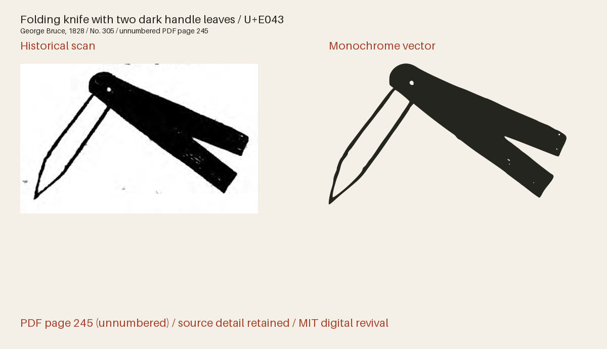

Folding knife with two dark handle leaves
Specimen PDF page 245 (unnumbered leaf).
George Bruce, 1828 / No. 305 / unnumbered PDF page 245


Use this icon in HTML
Download the web bundle (ZIP), unzip it, then place the extracted collection folder beside your HTML file. Keep its subfolders together. The examples below will then work as written; adjust the paths if you put the folder elsewhere. The bundle includes the SVGs, PNGs, fonts, CSS, instructions and license notices.
Monochrome image
This displays the monochrome artwork with a transparent background. Set the height; the width follows the original proportions.
<img src="collection/bruce-cuts-1828/svg/bruce-1828-p245-cut-305.svg"
alt="Folding knife with two dark handle leaves" height="96">An image has its own colour context, so page CSS cannot recolour its internal regions. For a decorative image beside a text label, use alt="".
SVG with your own colours
On an HTTP(S) page, load the sprite from the same site. This complete example uses dark primary ink and two strengths of red. Each region has an independent colour and opacity; set the secondary and tertiary values alike for a two-tone appearance.
<style>
.revival-cut {
display: inline-block;
font-size: 96px;
height: 1em;
width: 0.941406em;
vertical-align: middle;
--fr-primary-color: #24251f;
--fr-secondary-color: #a5422c;
--fr-tertiary-color: #a5422c;
--fr-primary-opacity: 1;
--fr-secondary-opacity: 0.55;
--fr-tertiary-opacity: 0.25;
}
</style>
<svg class="revival-cut" role="img" aria-label="Folding knife with two dark handle leaves">
<use href="collection/bruce-cuts-1828/web/icons.svg#bruce-1828-p245-cut-305"></use>
</svg>Monochrome icon font
Copy the whole web/ folder, including CSS and webfonts. Font size and colour use ordinary CSS. The icon font draws the solid version; use SVG for three-tone artwork.
<link rel="stylesheet" href="collection/bruce-cuts-1828/web/icons.css">
<span class="fr-icon fr-bruce-1828-p245-cut-305" aria-hidden="true"
style="font-size:96px;color:#a5422c"></span>
<span>Folding knife with two dark handle leaves</span>The decorative font icon is hidden from screen readers and has a visible text label. An icon conveying meaning on its own needs role="img" and an aria-label instead of aria-hidden.
Compare with the historical impression
